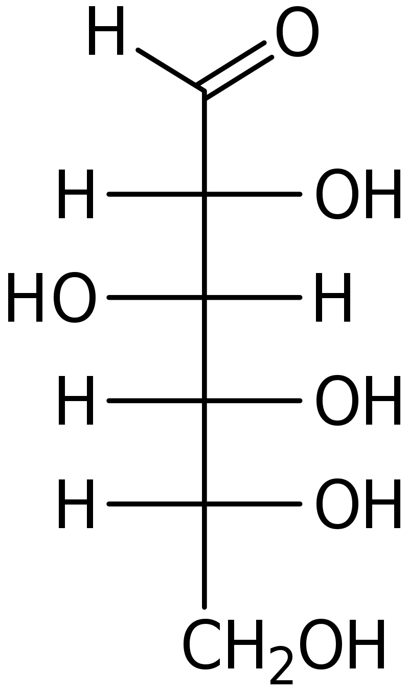

α-D-glucopiranosa

β-D-glucopiranosa

En disolución, las aldosas y cetosas de cinco o más carbonos están casi por completo en FORMA CÍCLICA. Un hidroxilo de la propia molécula se adiciona al grupo carbonilo y forma un hemiacetal (aldosas) o un hemicetal (cetosas) intramolecular. En la D-glucosa, el OH del C5 se une al C1 y se forma un anillo de seis átomos (cinco carbonos y un oxígeno), una piranosa; en la D-fructosa, el OH del C5 se une al C2 y el anillo es de cinco átomos, una furanosa. El carbono del carbonilo pasa a ser un nuevo carbono asimétrico, el carbono anomérico, y su OH puede quedar a uno u otro lado del anillo: son los anómeros α y β.
El C1 (naranja) del grupo aldehído es plano, y el O5 puede acercarse a él por cualquiera de sus dos caras. Las dos cadenas abiertas son la misma molécula en dos conformaciones, que difieren en el giro del enlace C1–C2. Al formarse el enlace C1–O5, el O del aldehído (magenta) se convierte en el OH anomérico: queda por debajo del anillo en el anómero α y por encima en el β. Los dos anillos difieren en la configuración del C1: son diastereoisómeros. (Los pasos intermedios de la animación son interpolados, solo ilustrativos.)
En agua, el anillo se abre y se cierra continuamente, de modo que una disolución de α- o de β-D-glucosa pura cambia su rotación óptica hasta llegar al equilibrio (mutarrotación), con un 36 % de anómero α, un 64 % de β y menos del 0,02 % de cadena abierta (LibreTexts, Química orgánica, 24.3).
La proyección de Haworth dibuja el anillo plano y sitúa cada sustituyente arriba o abajo del plano medio del anillo (en verde): cada carbono del anillo lleva uno arriba y otro abajo. En la D-glucopiranosa, los OH del C2 y del C4 quedan abajo, el del C3 arriba y el CH2OH del C5, arriba (serie D). El OH anomérico queda abajo en el anómero α, en trans respecto al CH2OH, y arriba en el β, en cis.
El anillo real no es plano sino una silla (botón De perfil), y en ella las dos posiciones de cada carbono son distintas. La posición axial es perpendicular al plano medio, como un eje vertical; la ecuatorial sale hacia fuera, por el contorno del anillo, y solo se inclina unos 20° hacia arriba o hacia abajo. Arriba/abajo indica a qué cara del anillo apunta un sustituyente; axial/ecuatorial, en qué dirección sale. Son dos descripciones independientes: en la silla, la posición axial apunta abajo en C1, C3 y C5 y arriba en C2 y C4, de modo que un sustituyente que está arriba es axial en unos carbonos y ecuatorial en otros. Al marcar Posiciones axiales y ecuatoriales, los átomos unidos en posición axial se rodean de un halo azul y los ecuatoriales, de uno amarillo.
| Carbono | Arriba (Haworth) | Abajo (Haworth) |
|---|---|---|
| C1, anómero α | H, ecuatorial | OH, axial |
| C1, anómero β | OH, ecuatorial | H, axial |
| C2 | H, axial | OH, ecuatorial |
| C3 | OH, ecuatorial | H, axial |
| C4 | H, axial | OH, ecuatorial |
| C5 | CH2OH, ecuatorial | H, axial |
Por tanto, en la β-D-glucopiranosa todos los OH y el CH2OH son ecuatoriales y todos los H del anillo, axiales. La α-D-glucopiranosa solo difiere en el C1: su OH es axial (abajo) y su H, ecuatorial (arriba).


En la D-fructosa, una cetohexosa, el OH del C5 se une al C2, el carbono de la cetona: el anillo es de cinco átomos y el carbono anomérico lleva el OH anomérico y el CH2OH del C1. Como en la glucosa, el anómero α tiene el OH anomérico en trans respecto al CH2OH del C5 (el C6) y el β, en cis. La fructosa también forma piranosas, pero en la sacarosa y en la fructosa 1,6-bisfosfato está como furanosa.


La D-ribosa, una aldopentosa, cierra el anillo entre el OH del C4 y el C1 y forma una furanosa. En los nucleótidos del RNA está como β-D-ribofuranosa, unida por el C1 a la base y por el C5 al fosfato (véase Bases y nucleótidos). La 2-desoxi-D-ribosa del DNA es igual salvo que el C2 no tiene OH.

| En la proyección de Fischer | En la proyección de Haworth |
|---|---|
| Grupo a la derecha | Abajo |
| Grupo a la izquierda | Arriba |
| Serie D (OH del último carbono asimétrico a la derecha) | El CH2OH terminal queda arriba |
| Carbono anomérico α | OH anomérico en trans respecto al CH2OH terminal (abajo en la serie D) |
| Carbono anomérico β | OH anomérico en cis respecto al CH2OH terminal (arriba en la serie D) |
| Anillo de 6 átomos (5 C + O) | Piranosa |
| Anillo de 5 átomos (4 C + O) | Furanosa |
Modelos 3D interactivos de las formas cíclicas de los monosacáridos: el cierre del anillo de la D-glucosa por una u otra cara del grupo carbonilo, los anómeros α y β de la D-glucopiranosa y de la D-fructofuranosa, la β-D-ribofuranosa y la 2-desoxi-β-D-ribofuranosa, con sus proyecciones de Haworth. Los anillos usan las coordenadas ideales del Chemical Component Dictionary del PDB (componentes GLC, BGC, Z9N, FRU, BDR y 2DR); las cadenas abiertas se obtuvieron rompiendo el enlace C1–O5 y optimizando con el campo de fuerzas MMFF.